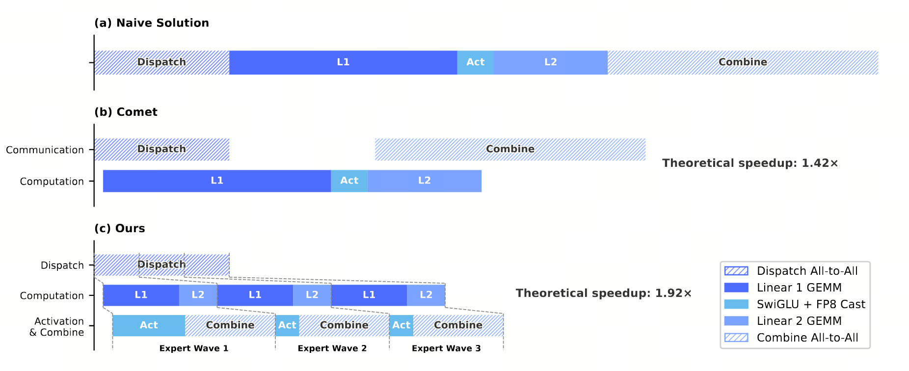

MegaMoE — 用流水隐藏 all-to-all
MoE 的专家并行需要 dispatch 与 combine 通信。V4 将专家切成多个 wave，把通信、GEMM 与激活放进同一条流水，并给出通信能够被完全隐藏的硬件条件。
MegaMoE = 把 MoE 的 dispatch / L1 / Activation / L2 / combine 五个阶段融成一个 pipelined kernel，用"专家波（wave）"为粒度调度
一句话：把专家切成多个 wave，使当前 wave 的计算与后续 wave 的通信并行。在计算时间足以覆盖通信时间时，通信可被完全隐藏；否则只能隐藏一部分。 Figure 5 给出 1.92× 理论值；实测为一般推理 1.50–1.73×，延迟敏感场景最高 1.96×。
- EP（Expert Parallelism · 专家并行）
- MoE 的标准切法：把 $E$ 个专家分散到 $G$ 个 GPU，每张卡只放 $E/G$ 个专家。每个 token 的 router 选 top-$k$ 后必须把 token 发去那 $k$ 个专家所在的卡，算完再收回来 —— 这就是为什么 MoE 一定要 all-to-all。
- all-to-all
- 每张卡都可能向其他卡发送数据，同时接收来自其他卡的数据。MoE 专家并行通常需要 dispatch 与 combine 两次跨卡交换；实际开销取决于拓扑、消息粒度、有效带宽和并行规模，不能简单写成随卡数线性增长。
- Dispatch / L1 / Activation / L2 / Combine（MoE 5 段）
- Dispatch：按 router 决定把 token 发到目标专家的卡上（all-to-all 1）；L1：专家 FFN 的 up 投影 + activation 输入；Activation：SwiGLU 等非线性；L2：down 投影；Combine：把结果发回原 token 所在的卡（all-to-all 2）。这 5 段在 naive 实现下是串行的。
- Wave（专家波）
- 把本次 batch 命中的专家切成若干组，每组里包含 $w$ 个专家。Wave-by-wave 流水：第 $i$ 个 wave 在算 L1 时，第 $i+1$ 个 wave 已经在做 dispatch；第 $i$ 个 wave 在做 combine 时，第 $i-1$ 个 wave 的 combine 早就发完。wave 数 ↑ → 流水深度 ↑ → 隐藏越彻底，但每段单次量越小、效率↓。
- Comet（前驱方案，被 MegaMoE 替掉的对象）
- 2024 年的 fused MoE 方案，把 5 段切成 3 段并行（dispatch + L1 / activation + L2 / combine）。问题：只有 3 段，流水深度浅，combine 阶段 GPU 计算单元闲；wave 概念没引入，长尾专家拖整体。MegaMoE 在 Comet 基础上加 wave 调度 + 5 段切，深度从 3 加到 5+。
- C/B 比（Compute-to-Bandwidth Ratio）
- $C/B$ 表示硬件每提供 1 Byte/s 网络带宽时配套的计算吞吐。对 V4-Pro 的 MoE，工作负载计算/通信比为 $2d_{\text{ff}}=6144$ FLOPs/Byte。若硬件 $C/B\le6144$，计算时间足以覆盖通信；若更高，则网络相对不足，增加带宽仍有帮助。
- Pull vs Push（通信原语）
- Push = 我主动把 token 推给目标卡；Pull = 我准备好 token，目标卡来取。细粒度通信下 pull 更友好：发起方不用知道接收方何时空闲，接收方按自己节拍取，避免 push-side 排队等握手。MegaMoE 使用 NVLink/IBGDA pull 模式。
- SwiGLU 简化（拿掉 exp/div）
- 标准 SwiGLU $= x\cdot\sigma(Wx)\cdot Vx$ 含 sigmoid。把它换成 $x\cdot Wx \cdot Vx$（不带 σ）能省掉 exp 与 div，放更大中间维 d 还能保精度 —— 是 MegaMoE 给硬件的另一个建议。
1. 为什么 MoE 一定卡在 all-to-all
要理解 MegaMoE 为什么必要，先看 MoE 在 EP 下的原始时间线。设单 token 从进入 MoE 层到离开，要走五步：dispatch（all-to-all 1）→ L1（FFN up 投影）→ Activation（SwiGLU）→ L2（FFN down 投影）→ combine（all-to-all 2）。 每段都不能并行：dispatch 没完，L1 没数据；L2 没完，combine 没数据。
把"一次 MoE forward 时间"列成最朴素的式子：
- $T_{\text{disp}} + T_{\text{comb}}$：以通信为主，受互联带宽、延迟、拓扑和消息粒度影响；
- $T_{L_1} + T_{L_2}$：以计算为主，受有效矩阵乘吞吐影响；
- $T_{\text{act}}$：通常很小，可忽略。
问题在于通信与计算串行加总。V4 的 profiling 结果是：单个 MoE 层的总通信时间低于总计算时间，因此存在用计算覆盖通信的空间；报告没有给出两者的具体比例。
hidden size、expert intermediate size 和每 token 激活 expert 数不足以决定单层通信占比；还需要每卡 token 数、并行拓扑和有效吞吐。报告只提供 profiling 的方向性结论和端到端加速，因此不能用未披露的部署参数反推单层时延。
2. 前驱：Comet 把 3 段并行
MegaMoE 不是凭空出现的。2024 年的 Comet 已经把 MoE 5 段并到 3 段：
- Stage 1: dispatch + L1（dispatch 在做的同时，已收到的部分 token 立刻进 L1）
- Stage 2: activation + L2
- Stage 3: combine
Comet 的问题是 流水深度只有 3 —— combine 是末尾，没人和它并行；而且没有"专家粒度"的概念，长尾专家（被极少 token 命中的专家）会让某个 stage 拖整体。MegaMoE 在 Comet 基础上做两件事：
- 切深：把 5 段都暴露出来分别调度，流水深度从 3 加到 5+；
- 切细：把"专家"切成 wave，每个 wave 是几个专家的集合，wave-by-wave 流水。
3. Wave 调度：让通信完全藏在计算下面
关键的工程 trick：把本次 batch 命中的专家分组成 $W$ 个 wave，每个 wave 包含 $E_{\text{hit}}/W$ 个专家。每个 wave 单独跑一遍 5 段，但相邻 wave 的段错位排队：

读图法：上方是 naive 串行（5 段排队加总），下方是 MegaMoE 切 $W$ 个 wave 后的时间线。每个 wave 自己内部仍然串行（5 段），但相邻 wave 的同型段错位：wave 2 的 dispatch 在 wave 1 还在做 L1 时就发出去了，wave 3 的 L1 在 wave 2 算 L2 时已经在 GPU 上跑。
这是只用于解释重叠关系的等时长示意。实际 wave 数要在通信重叠、GEMM 粒度和调度开销之间折中；报告未披露生产配置的固定取值。
如果仅为讲解而假设五个阶段等长、且不计任何调度开销，可以写出下面的理想化流水模型：
这个公式不是论文给出的 MegaMoE 性能模型，不能用于预测真实加速。Figure 5 针对 Flash 配置给出 1.92× 理论值；报告实测一般场景为 1.50–1.73×，延迟敏感场景最高 1.96×。
4. 那条公式：$C/B \le 6144$ FLOPs/Byte
MegaMoE 之所以能"通信被计算完全覆盖"，前提是本次计算的时间 $\ge$ 本次通信的时间。换算成单位字节：每发 1 字节，要伴随足够的 FLOPs 让计算时间盖住通信。把这个写成不等式：
报告按一个 token-expert pair 计算：SwiGLU gate、up、down 共 $6hd_{\text{ff}}$ FLOPs，FP8 dispatch 与 BF16 combine 共传输 $3h$ Bytes，因此工作负载比为 $2d_{\text{ff}}$。Pro 的 $d_{\text{ff}}=3072$：
$C/B \le 2d = 6144$ FLOPs/Byte 翻译成大白话就是：
- 左边 $C$（每秒能算多少）÷ $B$（每秒能传多少）：硬件提供的"每字节配多少 FLOPs"；
- 右边 $2d$：MoE 工作负载真正需要的"每字节多少 FLOPs"；
- $\le$ 关系：硬件给的算力配比 ≤ 工作负载需要的，说明计算还能跟上通信，可以靠 wave 流水把通信藏起来。
若硬件 $C/B\gg6144$，说明计算相对网络过快，通信无法完全隐藏，此时增加带宽可以降低 $C/B$。当 $C/B$ 已低于阈值后，继续增加带宽才会出现明显的边际收益递减。
- 示意计算：将硬件峰值算力除以互联峰值带宽，可判断它位于阈值哪一侧；实际 overlap 还受有效吞吐、拓扑、消息粒度和 kernel 调度影响。
- 报告没有披露 V4 的 EP 必须限制在节点内，也没有给出 H100/NVLink/InfiniBand 的这组部署结论。
- 硬件建议是让计算吞吐与互联带宽围绕工作负载需求保持平衡，而不是把 6144 当成适用于所有模型的固定常数。
5. 给硬件的四条建议（论文 §3.1, p. 16）
- 计算-通信比：当带宽达到能使 $C/B\le2d_{\text{ff}}$ 的水平后，继续增加带宽的边际收益下降。
- 功耗预算：融合 kernel 会同时提高计算、内存与网络负载，硬件应为并发工作负载预留功耗空间。报告没有给出 80% 的固定利用率。
- 通信原语：pull > push：细粒度 wave 通信里，pull 模式的接收方按自己节拍取，避免发起方的握手等待。NVIDIA IBGDA 的 GPU-initiated put 也算 pull 风格。
- 激活函数：报告建议探索不含指数或除法的低成本逐元素激活，并在相同参数预算下扩大中间维；没有给出“省 30%”的定量结果。
6. 三方对比 · 看时间游标比终点
上面是静态推导。下面这张动态甘特图把同一批 token、同一层 MoE，分别跑 naive / Comet / MegaMoE 三种调度，让一条红色"当前时刻"游标从左扫到右。看哪一行最先抵达虚线，就是哪种最快。
给初学者：三排对应三种调度，同色块代表同一阶段（黄=Disp, 蓝=L1, 紫=Act, 绿=L2, 橙=Comb）。游标走到哪、哪段就被"激活"了。绿色虚线是各自的终点。
注意：动画把各阶段时长设为人工单位，只展示“不同 wave 可以交错”，不复现 Figure 5 的真实比例。滑块结果不是论文性能预测，不能用来解释实测与理论值的差距。
前面的 $C/B \le 6144$ 是通信可被完全隐藏的必要平衡条件。仅凭这个阈值不能推出暴露通信的精确比例；下面的曲线只是把 $\min(1,6144/(C/B))$ 作为教学假设，真实结果还取决于有效吞吐、拓扑、消息粒度和调度。
读图法：蓝色曲线采用教学假设 $= \min(1, 6144 / C{:}B_{\text{硬件}})$，三个点使用峰值规格而非 V4 实测。它只能说明网络相对算力越弱，完全覆盖通信越困难；不能据此断言具体硬件的 overlap 百分比或 V4 的 EP 部署边界。
研究者注意：报告只给出“达到平衡点后继续增加带宽的边际收益下降”这一结论，没有给出 H100、NVLink 或 IB400G 的上述百分比。
本章小结
- 专家并行需要 dispatch 和 combine；MegaMoE 通过 wave 调度提高它们与专家计算的重叠。
- Figure 5 的理论加速为 1.92×；实测一般推理为 1.50–1.73×，延迟敏感场景最高 1.96×。
- 对 V4-Pro，$C/B\le2d_{\text{ff}}=6144$ 是完全隐藏通信的条件。高于阈值时增加带宽有帮助；低于阈值后继续加带宽收益递减。
- 四条硬件建议（C/B、power、pull、SwiGLU 简化）是 DeepSeek 把训练经验反向输给芯片厂商的尝试。